{kind=link}
{kind=link}
{kind=link}
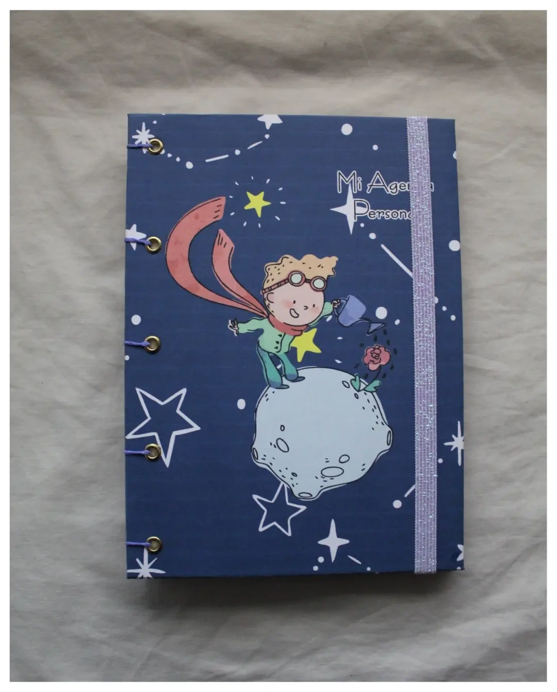
Agendas
Disponibles en formato anual (con calendario completo) o perpetua (sin fechas fijas, para empezar cuando quieras). Ideales para organizar tu día a día con estilo.
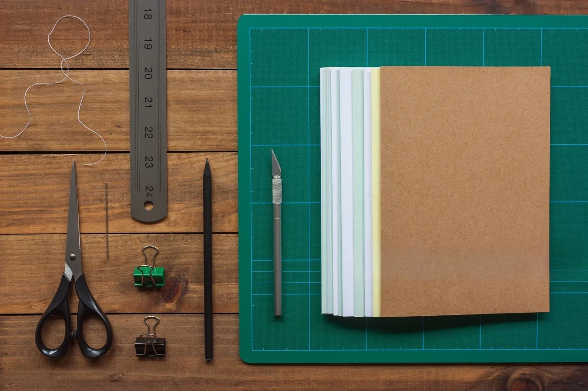
Encuadernación artesanal con diseños únicos y personalizados para vos.
Ver catálogoEn Notas Chivi creemos que los objetos hechos a mano guardan algo que los industriales no pueden replicar: alma. Cada cuaderno, agenda o diario que sale de nuestro taller es el resultado de horas de trabajo cuidadoso, selección de materiales de calidad y una obsesión por los detalles.
Ya sea que necesites organizar tu año, documentar tus viajes o simplemente volcar tus ideas en papel, tenemos el formato perfecto esperándote.
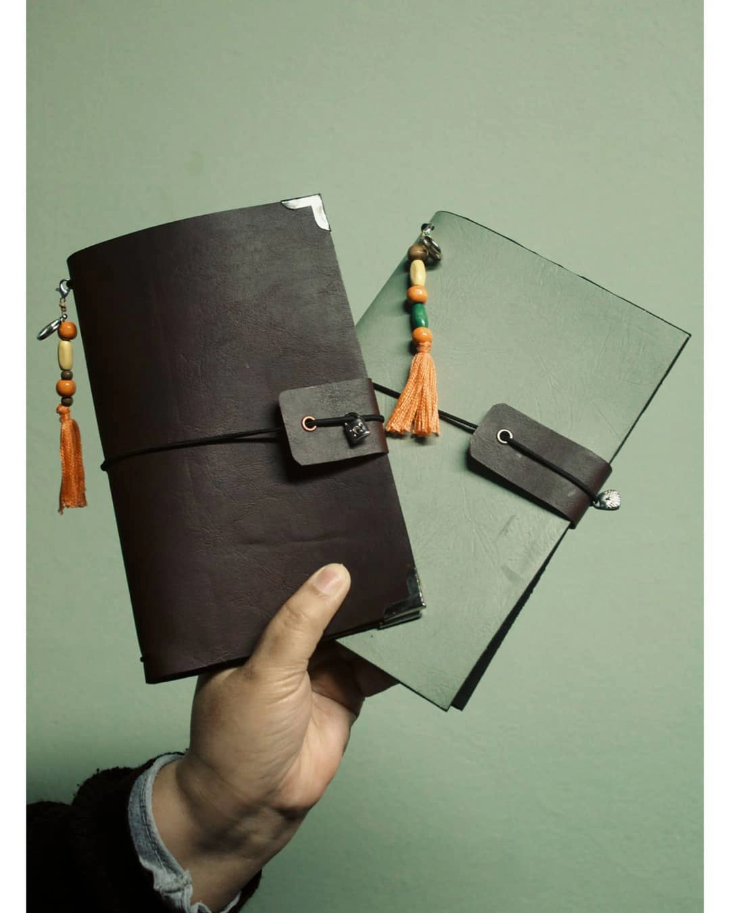
Una nueva forma de encuadernar que combina la flexibilidad de un cuaderno tradicional con la practicidad de los sistemas modernos. En vez de anillado, usamos discos intercambiables que permiten agregar, quitar o reordenar páginas en segundos.
Ideal para quienes necesitan reorganizar contenido constantemente: estudiantes, profesionales y creatives. Los discos permiten que el cuaderno abra completamente plano y, al mismo tiempo, podés cambiar de tapa o reordenar secciones sin complicaciones.
Disponible en varios tamaños de disco y colores de tapa. ¡Consultanos por combinaciones personalizadas!
Todos nuestros productos son personalizables en tamaño, papel y diseño de tapa.

Disponibles en formato anual (con calendario completo) o perpetua (sin fechas fijas, para empezar cuando quieras). Ideales para organizar tu día a día con estilo.
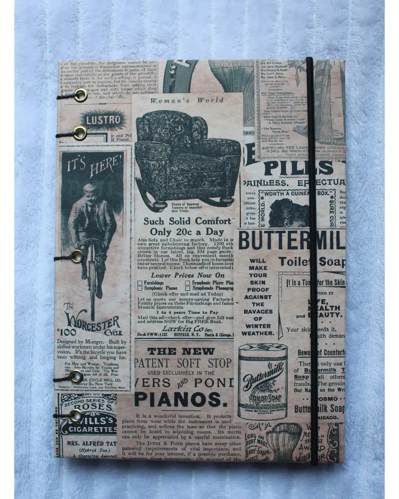
El clásico reinventado. Elegí entre interior rayado, liso o punteado (bullet journal). Tapas personalizables y papeles de 80-100 gramos que aguantan tinta sin traspasar.
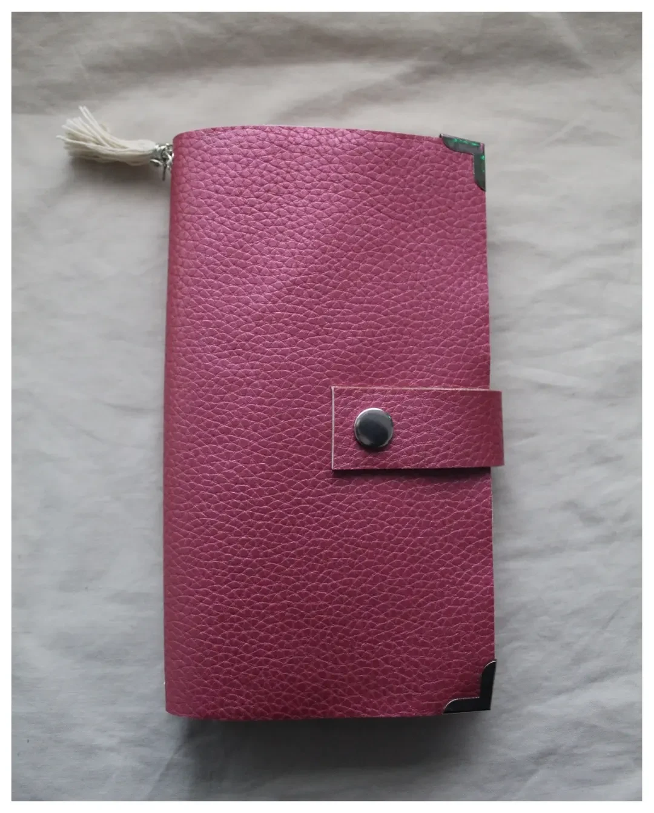
Sistema de cuadernos intercambiables sujetos con elásticos. Perfecto para quienes necesitan separar proyectos, viajes o materias. Agregá, quitá o reordená cuadernos a tu gusto.
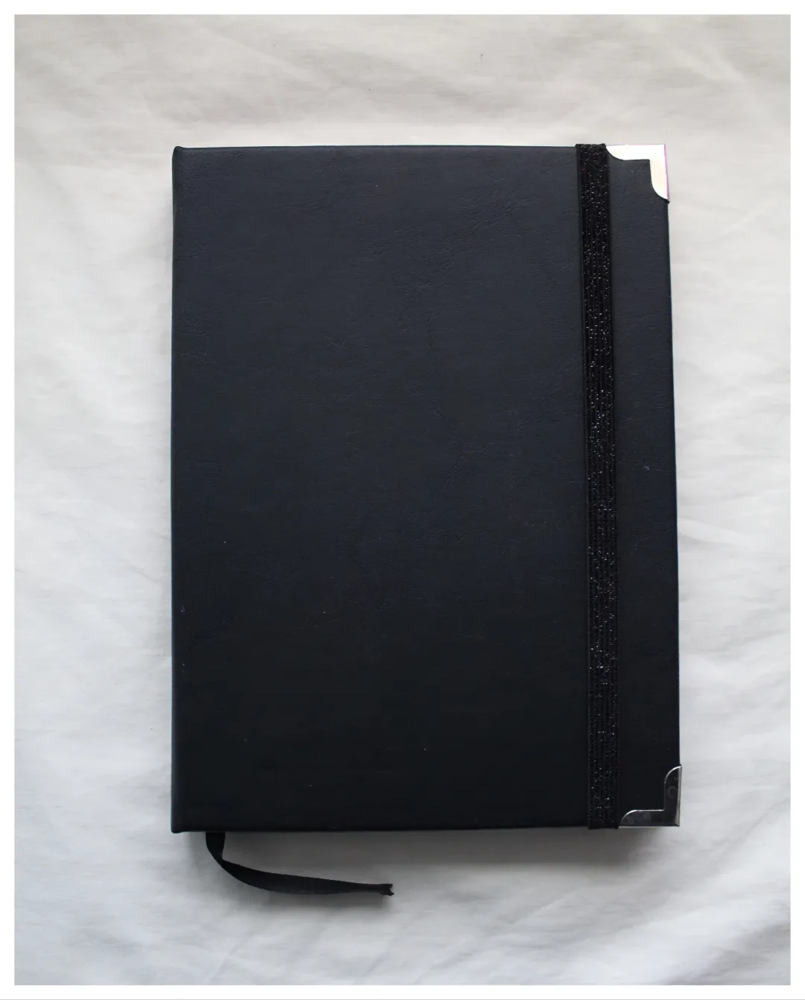
Cuadernos con papel punteado diseñados específicamente para el método Bullet Journal®. Pensados para planners creativos que combinan organización con arte.
Trabajamos con métodos tradicionales que garantizan durabilidad y una estética inconfundible.
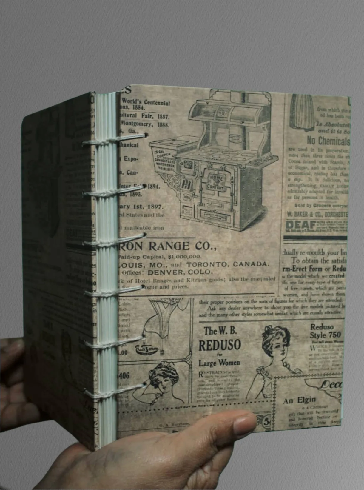
Una de las técnicas más antiguas del mundo. Permite que el cuaderno abra completamente plano, ideal para dibujar o escribir sin obstáculos. Su encuadernación expuesta en el lomo es pura elegancia.
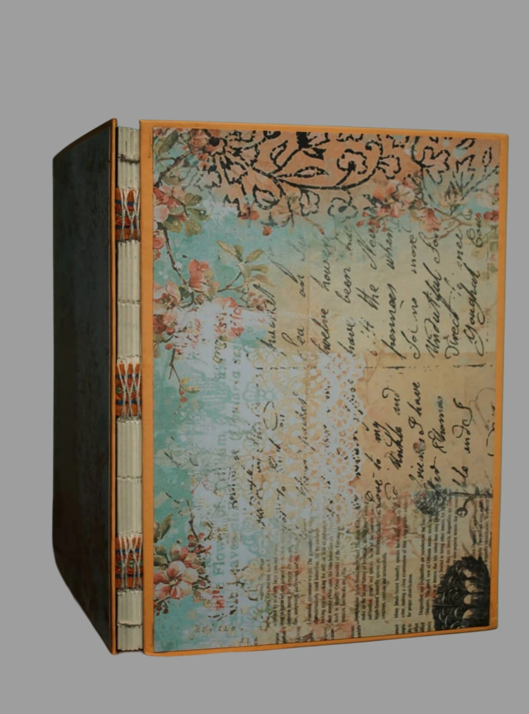
Estilo rústico y contemporáneo donde los hilos forman parte del diseño. Cada puntada es visible y se convierte en un elemento decorativo único en cada pieza.
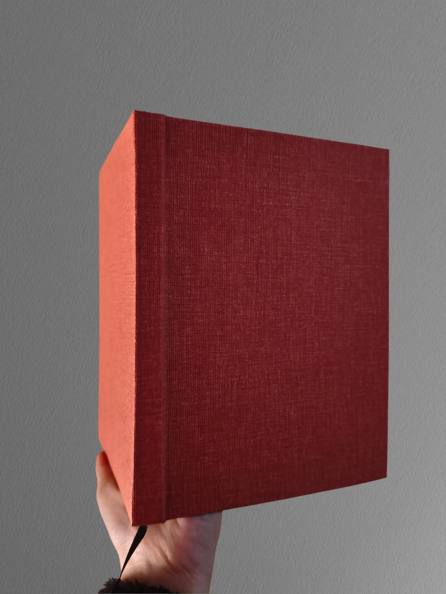
La tradición de los grandes libros. Tapas duras forradas en tela o papel de alta gramaje, resistentes al paso del tiempo. Perfecta para agendas y diarios que acompañan años.
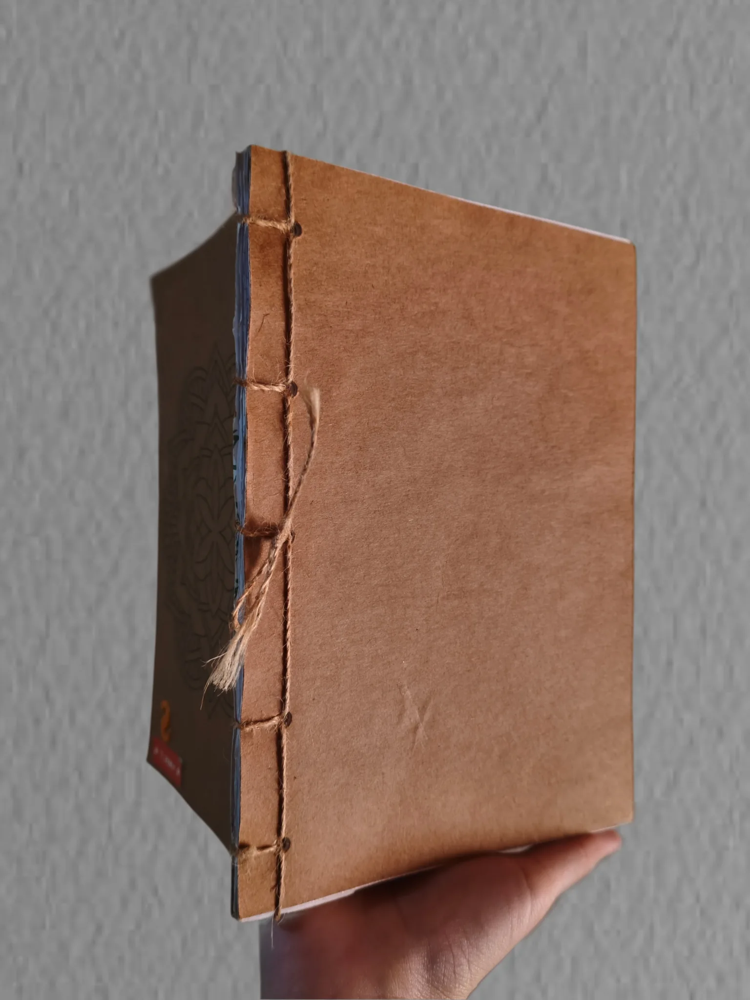
Minimalista y precisa. Utiliza un solo hilo para unir las páginas con patrones geométricos decorativos en el lomo. Ligera, flexible y visualmente impactante.
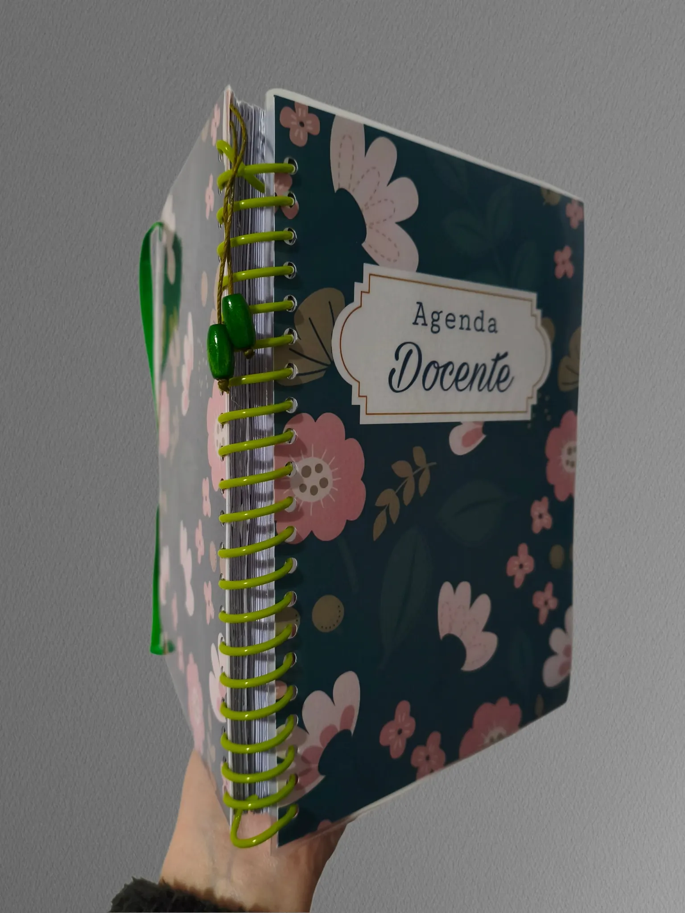
El método más práctico y resistente. Anillos plásticos que permiten abrir el cuaderno completamente plano, ideal para agendas, planners y cuadernos de uso intensivo. Duradero y funcional.
Cada pieza es personalizada y hecha por encargo. No trabajamos con stock masivo porque creemos en la calidad sobre la cantidad.
El tiempo estimado de elaboración y entrega es de una semana desde la confirmación del diseño y el pago. Durante el proceso te mantenemos informada sobre el avance de tu pedido.
{kind=link}
{kind=link}
{kind=link}
{kind=link}
{kind=link}
{kind=link}
{kind=link}
{kind=link}